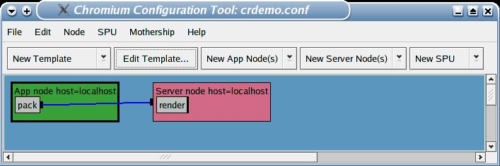
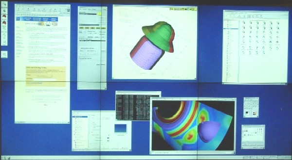

Over the past few years, progress in consumer graphics card capabilities and desktop CPU performance, coupled with advances in high-performance networks, have enabled a new generation of supercomputer: the commodity graphics cluster. These new clusters, built from collections of off-the-shelf Pcs outfitted with consumer graphics cards, offer unprecedented power for the rendering and display of 3D graphics. However, the application programming interface to these systems was not designed for parallel clusters. Chromium provides a common parallel graphics programming interface to support such clusters. In addition, it allows most existing serial applications to run without modification, and enables creation of powerful new parallel graphics applications capable of fully exploiting the power of these clusters.
Chromium provides a number of key capabilities, uniquely combined into a single package
The Chromium infrastructure has been adopted by a large number of users and is rapidly forming the basis of a great deal of clustering research. Chromium's capabilities have not only proven to be useful on graphics clusters, but the technologies are also useful on the single desktop PC.
This article demonstrates the process of setting up Chromium on a cluster and configuring it for use on a tiled display. We discuss the important components of the Chromium system and how you can configure it for other uses.
To understand Chromium and how to set it up, you first have to understand some basic terminology:
Chromium is maintained at SourceForge. In addition to the source code, you'll also find a bug tracking system and three mailing lists. Even if you're not a developer, you may wish to subscribe to chromium-announce to receive information about updated releases.
To get the source code, you do not have to be a registered SourceForge user. You can get the source in one of two ways:
First, you can download the latest release, which is available from the main project page, under "Latest File Releases". This will be a gzip'ed tar file of the entire source tree on the release date, along with a copy of this documentation. Simply extract the archive and you've got everything. For example:
tar zxvf cr-1.7.tar.gz
gzcat cr-1.7.tar.gz | tar xvf -
Alternately, you can check out the top-of-tree source code from the CVS repository, if you want to live on the bleeding edge. To check out the source code, just follow the instructions on the CVS repository page. If you're unfamiliar with CVS, useful documentation is available in Open Source Development with CVS. If you want to track the CVS sources you should subscribe to the developers and CVS check-in mailing lists, which is where new development is discussed.
You will need Python 2.2 or later to build on any platform.
SunOS machines also require Perl 5.0 or later.
You'll need GLUT installed so that the demonstration programs will compile.
All of Chromium lives under a directory called "cr-X.Y" (where X.Y is the version). Change to that directory.
There are a few compile-time options that can be specified in the options.mk file. DMX support and threadsafety options are specified in this file, for example. If you have Myrinet or Quadrics network hardware, you can enable those interfaces here. At least initially, you shouldn't have to change anything in this file.
To start compilation, just type make (or gmake on some systems).
Binaries are put in cr-X.Y/bin/<ARCH>, where <ARCH> is the name of your architecture (Actually, it's what's returned by the uname command. Except on Windows, where cygwin's uname returns something long and silly, so it gets re-written to WIN_NT.). You should add this directory to your PATH environment variable.
Platform specific notes:
cr-X.Y/lib/<ARCH>. You will need
to add this directory to your LD_LIBRARY_PATH
environment variable. Chromium builds a lot of shared
libraries, so you can't skip this step.unix". This lets gmake use
bash as its subshell instead of the Windows shell,
which is required. Shared libraries on Windows get put in
cr-X.Y/bin/WIN_NT, which (since it's on your path,
right?) will be searched automatically, so there's no
LD_LIBRARY_PATH silliness.Firstly, NVIDIA's OpenGL header files (gl.h and glext.h) are somewhat broken. Just don't use them! If you accidentally install NVIDIA's header files in /usr/include/GL you should replace them with the stock XFree86 OpenGL headers or the headers included with Mesa.
If you're using RedHat Linux 9.0 (or later?) with NVIDIA hardware/drivers you'll probably have to set the CR_SYSTEM_GL_PATH environment variable to /usr/lib/tls
This causes Chromium to use the libGL.so library found in /usr/lib/tls/ instead of /usr/lib/, thus avoiding some thread-related problems.
Look at the cr-X.Y/config/Linux.mk for some additional gcc compiler flags that can increase performance on x86 Linux systems.
Once you download and uncompress the Chromium tarball, you'll want to explore the documentation. All documentation for Chromium lives in the doc directory. Load up doc in a web browser and wander around. Some pages that you'll find useful later on while configuring motherships are Provided SPUs and configuration options, Configuration options for server nodes, and Configuration options for app nodes. More on these options later.
Chromium's build system is entirely GNU make based. Thus, all that's generally required is a make. No configure needed. The build system works under Cygwin as well, though Windows is less supported and tested than Linux. The build doesn't take too long (just over 5 minutes on a 2Ghz Xeon).
Some build options are specified in options.mk. The most
important one is RELEASE Set that to 0 if you want to turn
on debugging symbols and turn off optimization. You definitely
should do this if there's something going wrong.
Support for different network interconnects can be found in util.
(These options have been moved into options.mk in Chromium releases after
1.7.) Set TEAC_SUPPORT to compile in Quadrics support,
GM_SUPPORT if you have a Myrinet interconnect, and
IB_SUPPORT if you have Infiniband. For SDP support
set SDP_SUPPORT to 1. No matter what you set in
util, TCP/IP support is always included.
Some miscellaneous options in options.mk that might also
be useful are USE_DMX and USE_OSMESA.
USE_DMX turns on support for automatic detection and use
of the Distributed Multihead X Server. See the "DMX" sidebar for
more information. USE_OSMESA compiles Chromium to do
off-screen rendering with the software-based Mesa 3D graphics
library. THREADSAFE may be set to 1 if you
want thread safety for parallel applications.
If you have doxygen and want to generate doxygen'ed source code
documentation you can set DOXYGEN to 1.
Before you make, be sure you have the required dependencies. Chromium requires Python version 2.2 or greater. It also expects to find an OpenGL installation and the GLUT toolkit in the standard places. If you want to run the optional graphical configuration tool (more on this later), you'll also need wxPython installed. To test that your build succeeded and everything is working, let's run a simple Chromium network. First, familiarize yourself with where the build system placed everything:
Chromium provides a number of test programs for various purposes. These can be very useful to run when starting out, or when debugging a recalcitrant Chromium network. Their source (found in the progs directory) is also invaluable as reference when writing applications that use Chromium. Some important programs are:
We're going to run atlantis with the simple crdemo.conf, found with the pre-packaged configuration files. Head over to the mothership/configs directory and run a mothership along with two Chromium nodes:
1: % cd mothership/configs
2: % python crdemo.conf atlantis &
3: % crserver &
4: % crappfaker
You should get two windows, one blank, one with fish. Congratulations, you've run your first Chromium network! Everything else is downhill from here.
Let's go through those commands, line by line, to understand what's going on. First, we head into the mothership/configs directory where all the configuration files are stored. Line 2 runs a mothership configured by the code in crdemo.conf. The network has two nodes, an app node and a server node. The app node merely forwards requests on to the server. The server opens its own render window and renders all requests into it. The mothership listens on port 10000 and waits for the nodes to contact it. Line 3 launches a Chromium server. It contacts the mothership and learns its place in the network. Line 4 launches Chromium's appfaker, which "tricks" the runtime loader into loading Chromium instead of the system's OpenGL library. When atlantis is launched, Chromium intercepts all of its OpenGL commands and packs them onto the network. The server receives the commands, unpacks them, and renders them to its own window. It is important to note that Chromium dynamically replaces a system's native OpenGL library with its own library when the application is executed. Because of this, Chromium can be used by almost any existing OpenGL application without modification.
If you want to start doing something more complicated (and who wouldn't?), the place to start exploring is the mothership configuration file. Chromium comes with a wealth of existing configuration files in the mothership/configs directory. Many times, you can accomplish what you want by copying and modifying one of these existing files.
Each Chromium network has one configuration file. This file describes everything that is associated with a given Chromium run: DAG nodes and edges; what SPUs are loaded by what servers; what options are specified for the servers, SPUs, app nodes; what type of network should be used; what view frustum each server should use; etc.
All configuration files are actually Python scripts. This provides an immense amount of power, since Chromium configurations can adapt themselves to changing requirements. All Python constructs are allowed, providing a wealth of options to the Chromium user.
Chromium networks are defined by instantiating Python classes that correspond to the various elements of the Chromium system, app nodes, server nodes, and SPUs. They are connected to each other through method calls, and joined together at the end into one system.
|
1: 2: 3: 4: 5: 6: 7: 8: 9: 10: 11: 12: 13: 14: 15: 16: 17: 18: |
import sys sys.path.append('../server') from mothership import * render_spu = SPU('render') render_spu.Conf('window_geometry', [0, 0, 512, 192]) hiddenline_spu = SPU('hiddenline') hiddenline_spu.Conf('line_width', 1) app_node = CRApplicationNode() app_node.AddSPU(hiddenline_spu) app_node.AddSPU(render_spu) app_node.SetApplication( crbindir+"atlantis -s 100" ) cr = CR() cr.AddNode(app_node) cr.Go() |
Listing 1 shows a simple, yet useful, configuration file. Lines 1-3 are there so that Python knows where to find the Python classes for the mothership.
Things start getting interesting at line 5, where the
render SPU is instantiated. This is the SPU that takes all
OpenGL commands and feeds them to the graphics card. It generally
opens up its own window. Most times, you want at least one of
these at the end of your DAG, though there are other uses. Line
6 shows how you configure something. All Chromium classes have
the same Conf member
function to set configuration parameters. Here, we're telling the
render SPU to resize its window to 512 by 192 pixels and
locate it in the upper left corner of the screen. At line 8 we
instantiate another SPU, the hiddenline SPU, which causes
all polygons to be drawn in a solid color, with their edges drawn
in black.
The default line width of 3 is a little thick, so at line 9 we reduce it down to 1 pixel wide.
Now that we have the SPUs created and configured, on line 11
we create a CRApplicationNode. We add the SPUs to the node
in order on lines 12 and 13, then tell the app node what
application to run on line 14. In this case, we want it to
run the stock atlantis application with 100
sharks.
Finally, we create the master cr object on line 16.
Only one of these can exist, since it contains the entire
Chromium network. We add the one and only node on line 17, and
set the mothership going on line 18.
A screen shot of this network in action can be seen in Figure 1. Note how the fish look in comparison to those in Figure 2, which was run with the same configuration but without the hiddenline SPU.
Understanding that these configuration files can sometimes be difficult to write, especially if one is unfamiliar with Chromium configuration file syntax, or through inexperience with Python, one of the Chromium developers provided a GUI for creating, viewing, and editing the configuration files.
You can find it at mothership/tools/configtool.py. As mentioned above, it requires wxPython be installed.
A screenshot of the Config Tool can be seen in Figure 3, displaying the crdemo.conf file that we first ran. The Chromium network is displayed from left to right, each node displayed as a box connected to other nodes, as appropriate. App nodes are green, server nodes are red. SPUs are shown as gray boxes inside of the nodes. While we won't get into detail about this editor here, know that you can edit all options of the nodes, the SPUs, and the Chromium system as a whole from inside the editor. In addition,there are templates for common operations like "sort-first" and "sort-last" rendering. For more advanced use of the Config tool, see the Graphical Config tool page.
Many applications of Chromium are to leverage a "powerwall", or tiled display. In this setup, multiple monitors or projectors are stacked to form a larger "virtual" display. This discussion specifically excludes CAVE-style systems, though Chromium is capable of rendering to these with additional configuration options.
Chromium comes with a bevy of useful SPUs, "plugins" that let you manipulate the OpenGL stream in various ways.
Here are some of the most useful SPUs:
glDrawPixels In
essence, the readback
SPU converts an OpenGL stream of geometry into a stream of
imagery.In the most basic configuration, a Chromium server is started on each node connected to a "tile" of the tiled display. One app node is connected to all of the servers through the tilesort SPU. (See Useful SPUs) As geometry is fed from the app node to the tilesortSPU, the SPU determines what geometry overlaps each tile. Each set of geometry is sent only to the tiles it overlaps, making for efficient transfer of the scene.
For brevity, only the section setting up the tilesort and the nodes is shown.
|
1: 2: 3: 4: 5: 6: 7: 8: 9: 10: 11: 12: 13: 14: 15: 16: 17: 18: 19: 20: |
TILE_WIDTH = 1280 TILE_HEIGHT = 1024 appnode = CRApplicationNode('machine0') tilesortspu = SPU('tilesort') appnode.AddSPU(tilesortspu) cr = CR() cr.AddNode(appnode) for col in range(2): # 2x1 layout renderspu = SPU('render') renderspu.Conf('fullscreen', 1) node = CRNetworkNode('machine%d' % (col+1)) node.AddTile(col*TILE_WIDTH, 0, TILE_WIDTH, TILE_HEIGHT) node.AddSPU(renderspu) tilesortspu.AddServer(node, protocol='tcpip', port=7000 + col) cr.AddNode(node) |
Listing 2 shows a mothership configuration file that describes a tiled display in a 2x1 configuration of uniformly-sized tiles. Other similar configuration files are mural.conf and wall.conf. Let's walk through this listing.
Lines 1-2 describes how big each individual tile is. Here we're assuming a tile size of 1280x1024, a common screen size.
Lines 4-8 set up the app node. Note the parameter to the
CRApplicationNode call: this is the name of the machine on
which the node will run. This lets you lay out the Chromium
network to correspond to your cluster.
The tilesort SPU is instantiated and added to the app
node on lines 5-6. The master cr object is then created and
the app node added to it on lines 7-8.
Now comes the interesting part.
Line 10 iterates over both tiles.
Lines 11-12 create a render SPU and set it to run fullscreen. Since each node drives a separate tile, this is exactly what we want to fully use the tiled display.
Line 14 creates the server node. Again, note the parameter that names the machine on which the node lives. Line 15 tells Chromium where in virtual screen space this particular node lies. The render SPU is added to the server node on line 17.
Lines 18 tells the tilesort SPU how to contact the server. Each node listens on a separate TCP/IP port. While this isn't necessary when all nodes live on different machines, as this example shows, it is important if you have more than one node on a single processor. Finally, line 20 adds the node to the Chromium system. With a mothership in place with this configuration, all that's needed is to start crservers on both back-end nodes, and start the application with crappfaker. The crservers should be pointed to the location of the mothership. If we started the mothership on machine0, say, then a crserver should be launched with: crserver -mothership= machine0:10000, specifying both the machine and the port number of the mothership. Alternately, the CRMOTHERSHIP environment variable can be used for the same purpose.
This can get tedious if there are a lot of tiles in the tiled display and many server need to be launched. Fortunately, Chromium has the ability to start the crservers automatically, though ssh, rsh, or other mechanisms. See the description of the autostart procedure in Auto-start / Auto-config.
Another option for tiled displays is running the Distributed Multihead X11 (DMX) system. See the "DMX" for more information. Chromium can be compiled to automatically detect and use DMX capabilities, automatically launching crservers on the back-end nodes, providing for a seamless and scalable tiled display experience for end users. We at LLNL have found this to be an ideal union of technologies.
In some cases, using crappfaker to launch your OpenGL application can be cumbersome due to application launching constraints. In this case, you need to replicate manually what crappfaker does for you. Execute the following commands (Linux illustrated here):
% cd lib/Linux
% ln -s libcrfaker.so libGL.so.1
% setenv LD_LIBRARY_PATH chromium/lib/Linux
On Linux, the standard system OpenGL is named libgl.so.1.
Other Oses have different, but similar, names. The Chromium
library that resolves the OpenGL API and starts the ball rolling
is its "faker" library, libcrfaker.so. Placing the
Chromium lib/os directory in the LD_LIBRARY_PATH
causes the runtime linker to find the Chromium faker library
instead of the System's OpenGL. The LD_PRELOAD environment variable can
also be useful for this purpose. With this setup, you can launch
your OpenGL application normally. Many people use this launch
method exclusively, relying on crappfaker in only rare
circumstances.
DMX

DMX Distributed X11 Server Providing a Single, Continuous Desktop Over Six XFree86 Servers
DMX is a proxy X server that controls multiple back-end X servers
that make up a tiled display. To an application, DMX appears as a
normal X server. All X11 requests are directed to the appropriate
back-end X server for resolution.DMX contains a GLX
implementation called GLXProxy. This implementation is a
broadcast-only system, meaning that all OpenGL requests are sent
to all back-end servers. While this is not scalable to large
numbers of back-end servers, it does provide capability and
usefulness for smaller tiled displays.
Chromium bridges the gap to larger displays. It detects DMX
and queries the name and location of the back-end X servers. It
then sets up the tilesort SPU to communicate with the
back-end servers directly, bypassing DMX. Using autostart,
Chromium can also be set up to automatically spawn a mothership
and the back-end crservers on the nodes. As the DMX window
is moved and resized, Chromium recomputes the tile layout for the
tilesorter and the servers. A movie showing a tiled
display running in this mode is available at the URL shown at the
bottom of the Resources section.
For more information in running DMX, see
Getting started with DMX.
What if it's not working ?
Chromium works with a large number of applications, clusters, and network
configurations, but it's not foolproof. Sometimes an application
that works just fine outside of Chromium will display strange
results when Chromium is added to the mix. Other times, the
introduction of a tiled display can reveal artifacts. This
section is a laundry list of things to try when Chromium isn't
acting the way you expect.
First, try out some of the test applications that come with
Chromium. Use your Chromium network, but run atlantis or
city instead. If your application is parallel, you might
try the psubmit application. If a test application works,
then the problem probably has to do with the way your application
makes OpenGL calls.
Chromium has primarily been developed and debugged on Linux
and other UNIX platforms. While it does work on Windows, there
are known problems. Most notably, display lists are problematic.
If at all possible, try using Linux instead.
If you're experiencing trouble, be sure to compile Chromium
with the RELEASE option in
options.mk turned off. This will enable
extra debugging information that can be useful in times of
trouble. Chromium can be extremely verbose in this mode, but
sometimes the warning messages will tell you something helpful.
Additionally, setting the CR_DEBUG environment variable
causes some extra warnings to be printed to standard error.
If your application uses OpenGL selection or feedback, you
have be sure to add the feedback SPU to your network. This
SPU implements those features.
Try inserting the print SPU into your network at
various points. As mentioned in Useful SPUs, the
print SPU writes a human-readable version of the OpenGL
stream to a file. This can be valuable if you aren't entirely
sure what's in the stream. More than one print SPU can
help determine how the stream is being processed through the
pipeline.
The problem might have to do with interaction with your
vendor's OpenGL driver. Try using Mesa instead of the system's
OpenGL, and set the MESA_DEBUG environment variable to
print warnings to standard error. Try increasing the size of the
global Chromium MTU. This has implications for the network layers
of Chromium. The optimum setting is dependent on your switch
fabric, though this is a bit of black magic. Sometimes this can
"magically" fix problems with tilesort.
cr = CR()
cr.MTU(1024*1024)
If you're having problems with tilesort, try
setting it to "broadcast" mode. In this mode, all geometry is
sent to all tiles, regardless of layout:
tilesort = SPU("tilesort")
tilesort.Conf("bucket_mode", "broadcast")
For other problems try the FAQ.
If all else fails, try the mailing lists. Chromium developers
are generally pretty good about helping people. The Chromium
User's list is chromium-users@lists.sourceforge.net
and the Chromium Developer's list is chromium-dev@lists.sourceforge.net.
Be sure to have tried some simple apps like atlantis and city
first. You should also include your mothership configuration file
so that people can understand how your network is laid
out.
If you are having problems with DMX, then see the DMX FAQ.
Bio
Sean Ahern is a Computer Scientist at Lawrence Livermore National Laboratory doing
research in distributed visualization. He can be reached at
seanahern@llnl.gov. This
work was performed under the auspices of the U.S. Department of
Energy by University of California, Lawrence Livermore National
Laboratory under Contract W-7405-Eng-48. UCRL-JRNL-204299
Resources
Chromium home page: http://chromium.sourceforge.net/
What's new in version 1.7:
http://chromium.sourceforge.net/presentations/SantaFe-BrianPaul/siframes.html
Original Chromium paper: http://graphics.stanford.edu/papers/cr/
Distributed Multihead X11: http://dmx.sourceforge.net/
Using Chromium with DMX on a Tiled Display (movie):
http://www.llnl.gov/icc/sdd/img/images/Cr_Tiled_Small.mpg